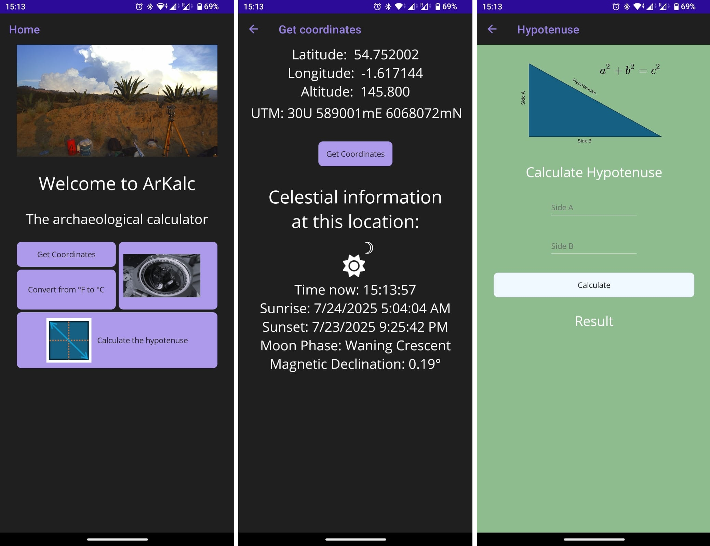
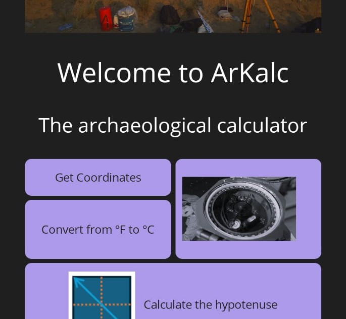

In this single galaxy of ours there are eighty-seven thousand million suns. [...] In challenging it, you would be like ants attempting to label and classify all the grains of sand in all the deserts of the world. [...] It is a bitter thought, but you must face it. The planets you may one day possess. But the stars are not for man.

Custom Mapbox map with tileset_data
ArKalc

-Calculate hypotenuse for grid
-Get coordinates and celestial info
-Compass bearing
Temporal Database
-PostgreSQL-MySQL (for storing user access)
-PHP
-Javascript
-Google Maps API
Link
Check out a A visualization proposal
Tracking the "flattening" of the curve during the Covid19 ("Coronavirus") pandemic.Archaeology
Software development
Data analysis